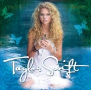
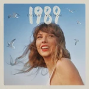
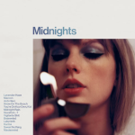

The Eras Tour
The Eras Tour é a sexta turnê em curso da cantora e compositora estadunidense Taylor Swift, que o descreveu como uma homenagem às "eras musicais" de sua discografia. Cobrindo 152 shows nos cinco continentes, começou em 17 de março de 2023, em Glendale, Estados Unidos, e está previsto para ser concluída em 8 de dezembro de 2024, em Vancouver, Canadá.
Anunciada após o lançamento de seu décimo álbum de estúdio, Midnights (2022), a The Eras Tour é a segunda turnê de Swift em estádios, depois da Reputation Stadium Tour de 2018. Cada show dura mais de 3.5 horas, com um set list de 44 músicas agrupadas em 10 atos distintos que retratam conceitualmente os álbuns da cantora.
- Tayloy Swift
- Fearless
- Speak Now
- RED
- 1989
- reputation
- Lover
- folklore
- evermore
- Midnights
Taylor Swift
Taylor Swift é o álbum de estreia homônimo da cantora e compositora estadunidense Taylor Swift, lançado através da Big Machine Records em 24 de outubro de 2006. As canções possuem como temática lírica relacionamentos vivenciados por Swift e por pessoas próximas a ela, e foram escritas pela cantora a partir de seus 12 anos de idade. O álbum foi produzido e gravado no ano de 2006, enquanto Swift cursava o 1º ano do ensino médio.
Fearless
Fearless é o segundo álbum de estúdio da artista musical estadunidense Taylor Swift. O seu lançamento ocorreu em 11 de novembro de 2008, através da Big Machine Records. Produzido ao longo de 2007 e 2008, o disco incorpora elementos da música country que também estiveram presentes em seu antecessor, Taylor Swift (2006), trazendo ainda uma sonoridade misturada à da música pop em sua essência.
Speak Now
Speak Now é o terceiro álbum de estúdio da cantora e compositora estadunidense Taylor Swift, lançado no dia 25 de outubro de 2010 através da Big Machine Records e do Universal Music Group. O disco foi divulgado dois anos depois do álbum Fearless (2008), um grande sucesso de vendas por parte de Swift. Suas composições foram assinadas exclusivamente pela cantora. Derivado principalmente da mescla entre as músicas country e pop, tem como tema de suas letras os relacionamentos vivenciados por Swift ao longo de sua vida, baseando-se também nas conturbadas experiências geradas por eles na vida da intérprete.
RED
Red é o quarto álbum de estúdio da artista musical estadunidense Taylor Swift, lançado em 22 de outubro de 2012, através da Big Machine Records. Depois de escrever seu quinto disco Speak Now (2010) inteiramente sozinha, a cantora iniciou as composições para o novo trabalho da carreira. Embora tenha inicialmente escrito mais de 20 canções com o colaborador de longa data Nathan Chapman, Swift decidiu que deveria "sair da zona de conforto" e quis trabalhar com novos profissionais, tendo composto mais de 30 músicas e trabalhado com novos colaboradores na produção de Red
1989
1989 é o quinto álbum de estúdio da artista musical estadunidense Taylor Swift, lançado em 27 de outubro de 2014, através da gravadora Big Machine. Inicialmente, o álbum foi comercializado somente nos formatos físico e digital, não sendo disponibilizado em serviços de streaming, uma decisão vinda da própria artista. O disco foi desenvolvido e gravado entre 2013 e 2014 durante a turnê The Red Tour.
reputation
Reputation (estilizado em letras minúsculas) é o sexto álbum de estúdio da artista musical estadunidense Taylor Swift, lançado em 10 de novembro de 2017, através da gravadora Big Machine. Após seu quinto álbum de estúdio 1989 (2014), Swift se envolveu em disputas altamente divulgadas com várias celebridades e tornou-se constantemente alvo de escrutínio em tablóides. Ela, portanto, isolou-se da imprensa e da mídia social, onde mantinha uma presença ativa, e passou a desenvolver Reputation como um esforço para renovar seu estado de espírito, visando abordar duas temáticas principais; um baseado nas fofocas excessivas que a cercam, visto no tema declarativo do álbum, e o outro sobre como encontrar o amor em meio aos eventos tumultuosos.
Lover
Lover é o sétimo álbum de estúdio da artista musical estadunidense Taylor Swift. O seu lançamento ocorreu em 23 de agosto de 2019, através da Republic Records. Após o lançamento de seu álbum anterior Reputation (2017), descrito como um "mecanismo de defesa" para lidar com a experiência tumultuosa de sua vida pública, Swift finalizou seu contrato de doze anos com a Big Machine Records. Enquanto excursionava pelo mundo com a Reputation Stadium Tour (2018), a artista pôde experimentar o amor de seus fãs o que a ajudou a recuperar sua saúde mental após as controvérsias que levaram a Reputation. Com base nisso, ela começou a conceituar um álbum que apresentasse seu lado pessoal e vulnerável, conectando-a com seu público e mostrando seus pontos fortes como artista, além de canalizar sua vida pessoal reajustada e a libertação de sua percepção pública.
folklore
Folklore é o oitavo álbum de estúdio da artista musical estadunidense Taylor Swift, lançado em 24 de julho de 2020 através da editora discográfica Republic Records. A concepção de Folklore se deu no contexto da pandemia de COVID-19, quando Swift foi obrigada a entrar em quarentena, findando por abortar os planos de embarcar em uma turnê mundial para promover seu disco anterior, Lover (2019), bem recebido comercial e criticamente. Nesse período, a artista idealizou Folklore como "uma coleção de canções e histórias que fluíam como um fluxo de consciência de sua imaginação".
evermore

Evermore é o nono álbum de estúdio da artista musical estadunidense Taylor Swift. Swift descreveu Evermore como uma ramificação da "floresta folclórica" — uma direção escapista e inspirada em cottagecore que ela idealizou pela primeira vez com Folklore; ela os definiu como álbuns irmãos. Musicalmente, mantém a exploração por gêneros musicais alternativos, como rock alternativo, folk-pop e chamber rock, que fora iniciada em seu predecessor. A narrativa impressionista e a mitopoeia dominam sua técnica lírica. Seu conceito foi descrito como uma antologia de contos sobre amor, casamento, infidelidade e luto, explorando as complexidades da emoção humana.
Midnights
Midnights é o décimo álbum de estúdio da cantora e compositora estadunidense Taylor Swift, lançado em 21 de outubro de 2022 através da Republic Records. Swift o concebeu como um álbum conceitual sobre ruminações noturnas inspiradas em suas noites sem dormir. A composição autobiográfica explora emoções amplas, como arrependimentos, autocrítica, fantasias, desgosto e paixão, usando letras confessionais, porém enigmáticas, que aludem à sua vida pessoal e imagem pública.